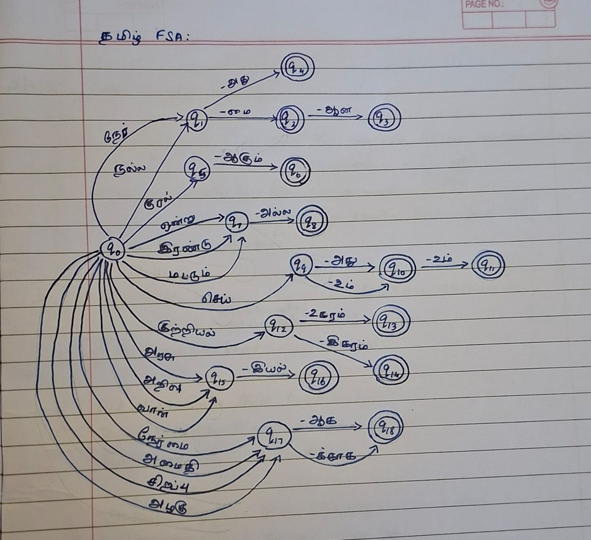
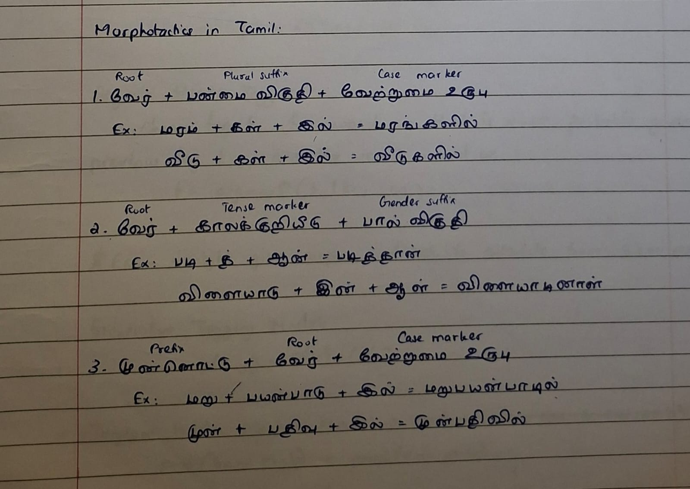

ACTIVITY 04
FSA in Tamil
Finite-state representation and Tamil morphotactics. This activity contains a handwritten FSA diagram and notes on Tamil morphotactics. The notes illustrate how a root can combine with grammatical suffixes such as plural, tense and case markers to form word forms.
Finite-State Automata · Tamil MorphologyObjectives
- Review the uploaded finite-state automaton diagram.
- Understand the role of roots and suffixes in word formation.
- Identify examples of plural, tense and case markers in the notes.
- Observe how morphological information can be represented as sequences of states or transitions.
Concepts & Implementation
FSA diagram
Review the handwritten state diagram included in the activity materials.
Tamil morphotactics
Study the notes showing combinations of roots and suffixes.
Suffix combinations
Observe the examples involving plural suffixes, tense markers and case markers.
Connect morphology and FSA
Consider how a finite-state model can represent valid sequences of morphemes.
Activity Materials
Click an image to view it at full size.


Learning Outcomes
- Reviewed a handwritten FSA representation.
- Identified root and suffix components in the Tamil morphology notes.
- Connected morphological word formation with finite-state representation.
Content on this page is organised from the materials supplied in the activity folder. Any interpretation beyond those materials has been kept to a minimum.